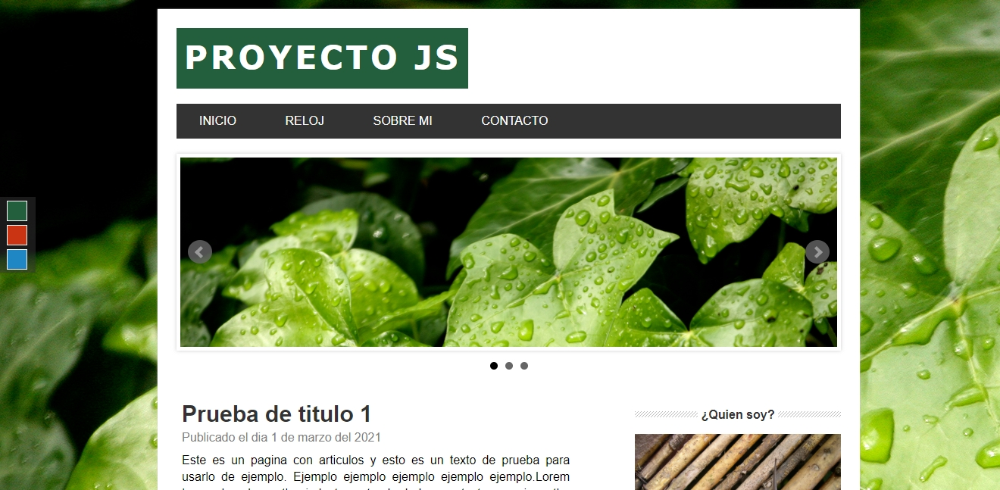
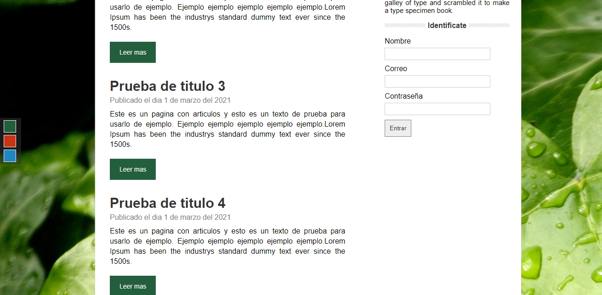
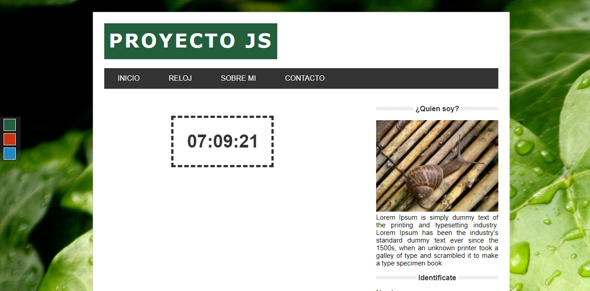

Proyecto con Javascript
  En esta pagina web se ve funcionalidades con JavaScript, creacion de una galería o un slider de imágenes utilizando plugins. Además de esto se hizo un listado dinámico de artículos y post que se almacenan en un json. Se vera un cambiador de temas de la web es decir que la página web tiene unos botones que nos permiten cambiar de tema de colores y el tema del fondo es decir que se tiene tres skins diferentes.